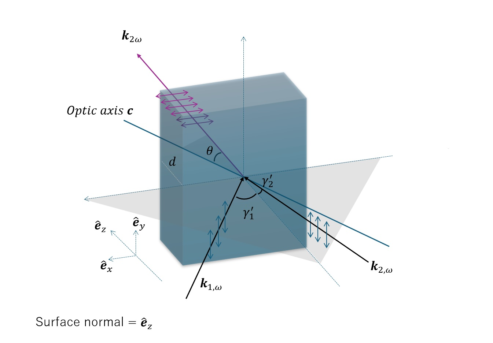

Non-Collinear Type-I SHG in a BBO Crystal#
아래 그림은 원문에 포함된 BBO 결정의 기하학적 배치를 나타낸다.

1. 좌표계와 편광#
BBO crystal의 optic axis와 crystal surface normal 사이의 각도를 \(\theta_c\)라고 하자. 좌표계는 crystal surface normal이 \(z\)축과 평행하도록 설정하고, optic axis가 \(x-z\) 평면에 놓이도록 한다.
두 fundamental beam의 외부 입사각을 surface normal에 대하여 각각 \(\gamma_1'\)과 \(\gamma_2'\)라고 하자. 또한 두 beam의 편광을 모두 \(y\)방향으로 정렬한다.
이 경우 optic axis \(\mathbf{c}\), \(\mathbf{k}_1(\omega)\), \(\mathbf{k}_2(\omega)\)는 모두 \(x-z\) 평면에 존재한다. Fundamental beam의 전기장은
이므로 이 principal plane에 수직이다. 따라서 두 fundamental beam은 모두 ordinary wave로 crystal 내부에서 전파한다.
BBO는 negative uniaxial crystal이며 Type-I SHG에서는
의 상호작용이 가능하다.
2. Crystal 내부의 굴절각#
Crystal 내부에서의 굴절각을 각각 \(\gamma_1\), \(\gamma_2\)라고 하자. Snell’s law에 의하여
3. 비공선 SHG의 momentum conservation#
비공선 SHG에서 momentum conservation, 즉 phase-matching condition은
이다.
두 fundamental beam이 동일한 파장과 굴절률을 가지고 있고, \(z\)축에 대칭적으로 \(\gamma\)의 각도를 갖는 경우, 두 fundamental wave vector의 \(x\)성분은 상쇄되고 SH wave는 \(z\)방향으로 전파한다. 이때 생성되는 second-harmonic wave vector의 크기는
여기서 fundamental wave에 대해서는
이고, second-harmonic wave에 대해서는
이다. 이상의 식을 조합하면
즉,
를 얻는다. 이것이 non-collinear Type-I SHG에서 필요한 phase-matching condition이다.
공선인 경우에는
4. BBO의 굴절률#
BBO의 Sellmeier 식은 다음과 같다. 여기서 \(\lambda\)의 단위는 \(\mu\mathrm{m}\)이다.
Quantity |
Calculated value |
|---|---|
\(n_o(808\,\mathrm{nm})\) |
1.66032 |
\(n_o(404\,\mathrm{nm})\) |
1.69210 |
\(n_e(404\,\mathrm{nm})\) |
1.56727 |
5. Extraordinary SH의 유효 굴절률#
Extraordinary SH wave vector와 optic axis 사이의 각도를 \(\theta\)라고 정의한다. 이때 effective extraordinary refractive index는
로 주어진다.
SH beam이 \(z\)방향으로 전파될 경우 \(\theta=\theta_c\)이므로, phase-matching condition을 만족하기 위해서는 아래식을 만족해야 한다.
6. 현재 조건에서의 각도#
위 조건을 만족하는 crystal 내부의 각도는
이며, 공기 중의 입사각은
를 만족하면 된다.
현재의 광학계, 초점거리 \(f=200\,\mathrm{mm}\)이고 광축으로부터 beam의 offset이 \(12.5\,\mathrm{mm}\)라면
이다. 이 각도는 엄밀히 말하면 정확한 phase-matching angle은 아니지만, 차이가 작고 crystal도 얇기 때문에 거의 phase-matching 조건으로 볼 수 있다.
초점거리 \(75\,\mathrm{mm}\)의 lens를 사용할 때에는 입력 beam과 광축 사이의 offset을
로 줄여야 한다.